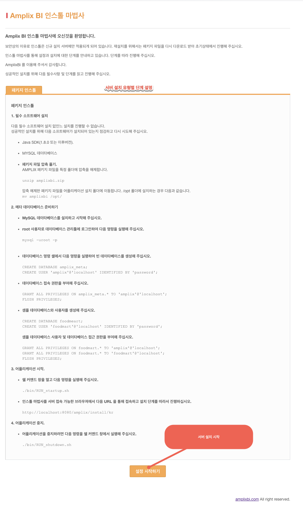

네비게이션
2.1. 서버 설치 가이드
AMPLIX 서버의 설치는 서버 소프트웨어의 시스템에서의 설치 및 메타 데이터베이스 생성의 단계로 구성된다.
단계 1: 서버 소프트웨어의 설치
AMPLIX 파트너를 통해 구매한 소프트웨어를 서버 시스템의 폴더에 다운로드 한후 소프트웨어의 압축을 해제하여 압축파일의 소프트웨어 패키지를 구성한다.
예제: c:/amplix/에 패키지 파일 복사 후 압축을 해제한다.
구매 시 발급된 라이센스 키 파일을 c:/amplix 폴더에 복사한다. 라이센스 키 파일은 “license.dat” 의 이름으로 되어 있다.
단계 2: 메타 데이터베이스 서버 설정
필요 소프트웨어 에 기술된 데이터베이스 시스템에 메타 데이터베이스를 생성한다.
생성에 필요한 스크립트는 다음과 같다.
a. 데이터베이스 생성
create database amplix_meta default character set utf8 collate by utf8_general_ci;
b. 사용자 생성
create user 'amplix_meta'@'localhost' identified by '패스워드';
* 패스워드 를 사용할 데이터베이스 사용자 패스워드로 변경 후 스크립트를 실행한다.
c. 테이블의 권한 부여
grant all privileges on amplix_meta.* to 'amplix_meta'@'localhost';
flush privileges;
단계 3 : 샘플 데이터베이스 생성
a. 데이터베이스 생성
create database amplix_sample default character set utf8 collate by utf8_general_ci;
b. 사용자 생성
create user 'amplix_sample'@'localhost' identified by '패스워드';
* 패스워드를 사용할 데이터베이스 사용자 패스워드로 변경 후 스크립트를 실행한다.
c. 테이블의 권한 부여
grant all privileges on amplix_sample.* to 'amplix_sample'@'localhost';
단계 4 : 서버 시작 및 인스톨 마법사 호출
서버 패키지 설치 폴더의 bin/RUN_startup.bat 파일을 실행하여 서버를 시작한다.
웹브라우져를 통해 서버 인스톨 마법사 페이지를 호출하여 메타 데이터베이스 등 설정을 마무리 한다.
http://serverip:8580/install/kr
단계 5 : 서버 인스톨 마법사
서버 시작 후 서버에 접속할 수 있는 웹 브라우저를 통해 인스톨 마법사 화면을 호출한다. 인스톨 마법사의 URL 은 http://서버호스트:850/intall/kr 의 형태를 가진다. 서버 인스톨 마법사의 초기 화면은 아래와 같다.

(그림 : 인스톨 마법사 화면 구성)
설치 준비 단계에 대한 내용 확인 후 하단의 Goto Configurations 버튼을 클릭하여 메타 데이터베이스에 대한 정보 입력 등 세부 설정 작업 단계로 진행한다.
서버의 시작 및 종료
서버를 시작하려면 bin/RUN_startup.bat 파일을 실행한다. 시스템을 종료하려면 bin/RUN_shutdown.bat 파일을 실행한다.